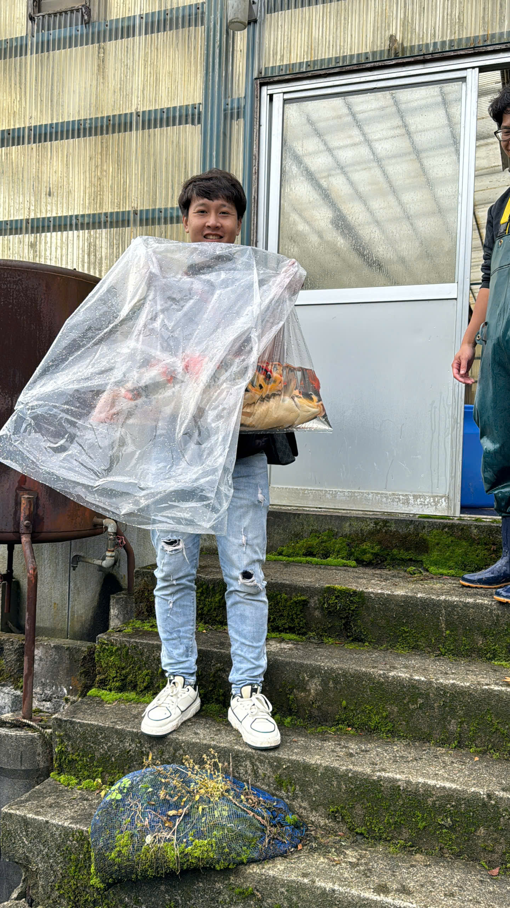

Ai viết cẩm nang này
Đỗ Thanh Long — Linh Long Koi Farm
Tôi là chủ trại cá Koi Nhật Linh Long Koi Farm ở Gia Kiệm, Đồng Nai. Tôi không viết cẩm nang này từ sách vở — tôi viết từ những gì mình làm thật mỗi ngày: chọn cá, nuôi nước, cứu hồ cho khách.
Tôi từng sang tận Nhật, vào nhà vườn Koi, đứng cạnh người nghệ nhân học cách họ chọn và đọc cá; mang cá đi Koi Show trong nước để đo tay nghề. Thứ tôi mang về không chỉ là cá, mà là cách làm nghề tử tế — xây thương hiệu bằng sự thật.